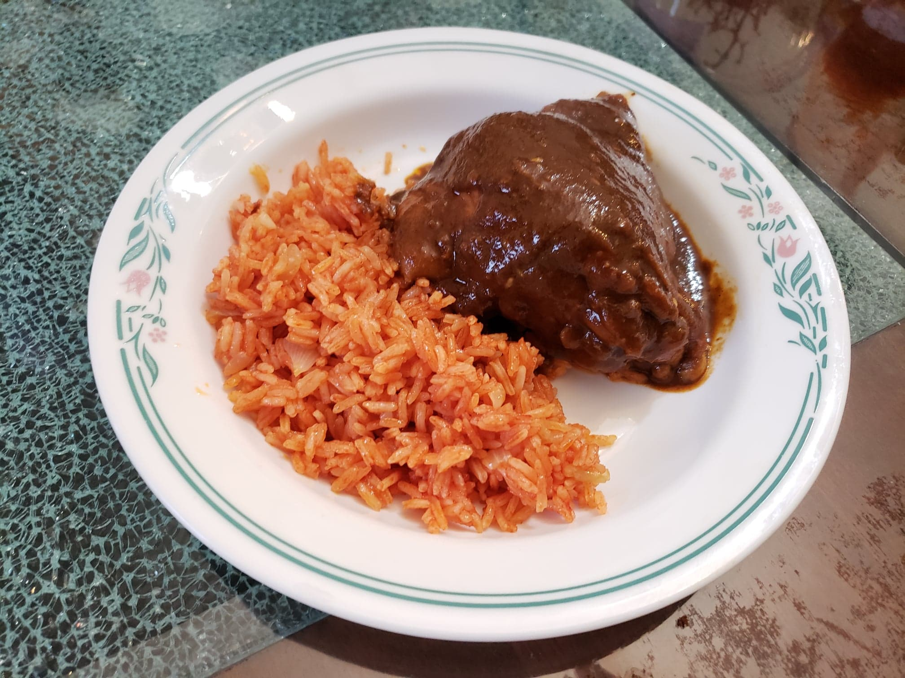

Chicken Mole

Ingredients:
Chicken and Broth:
- 5 lb Chicken thighs, Bone in, Skin on
- 8 cups Water
- 1/2 White onion, halved
- 3 cloves Garlic
- 2 Celery sticks, each cut into three pieces
- 2 sprigs Cilantro
- 1 tsp Salt, or to taste
Mole Sauce:
- 1 large Tomato
- 1 White onion, coarsely chopped
- 1 large clove Garlic
- Optional: 1 dried Chipotle chili pepper, deseeded
- 1 toasted Corn tortilla
- 4-5 cups Chicken broth, or to taste
- 1 jar 8.25 oz Mole paste
- 1/2 tablet Mexican chocolate
- 1/4 tsp Ground cinnamon
- 1/4 tsp Ground anise seeds
- 1/2 tsp Salt, or to taste
- Optional: 1 tbsp Toasted sesame seeds
Instructions:
- Place the chicken into a stockpot with the garlic, onion, celery sticks, and cilantro. Cover with water. Bring to a boil and then reduce to a simmer. Let cook for 45 minutes or until tender. Season with salt and set aside.
- Place the tomato, onion, garlic, and chipotle pepper, if using, in a saucepan. Cover with water and turn the heat to medium-high. Once it comes to a rolling boil, reduce the heat and cook for 8 minutes or until the tomatoes are cooked.
- Once the tomatoes are cooked, drain the water and place the tomatoes, onion, garlic, and the toasted tortilla in your blender. Process until you have a fine sauce, then set aside.
- Place a large frying pan over medium-low heat and add the jar of mole paste and a cup of the chicken broth to start diluting the paste.
- Add one more cup of the broth along with the tomato sauce, chocolate, ground cinnamon, and ground anise seed. Stir well until the mole paste has completely dissolved. Add more broth as needed. The paste will get thicker as it continues cooking.
- Add the chicken pieces to the sauce, season with salt, and slowly simmer for about 5 more minutes.
- If using, after removing from heat, mix in the toasted sesame seeds. Serve with Mexican Red Rice.